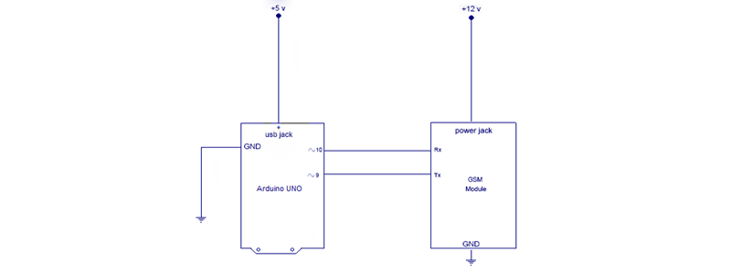

Overview
A GSM Module is basically a GSM Modem connected to a PCB with different types of output taken from the board – say TTL Output (for Arduino and RS232 Output to interface directly with a PC . The board will also have pins or provisions to attach mic and speaker, to take out +5V or other values of power and ground connections. These type of provisions vary with different modules.
Lots of varieties of GSM modem and GSM Modules are available in the market to choose from.Here we are using SIM900A.This module supports communication in 900MHz band. We are from India and most of the mobile network providers in this country operate in the 900Mhz band.
So that’s all about the gsm module basics. Now lets power it up!
Booting the GSM Module
Interfacing GSM Module to Arduino
There are two ways of connecting GSM module to Arduino. In any case, the communication between Arduino and GSM module is serial. So we are supposed to use serial pins of Arduino (Rx and Tx). So if you are going with this method, you may connect the Tx pin of GSM module to Rx pin of Arduino and Rx pin of GSM module to Tx pin of Arduino. Now connect the ground pin of Arduino to ground pin of gsm module.
Note: - The problem with this connection is that, while programming Arduino uses serial ports to load program from the Arduino IDE. If these pins are used in wiring, the program will not be loaded successfully to Arduino. So you have to disconnect wiring in Rx and Tx each time you burn the program to Arduino. Once the program is loaded successfully, you can reconnect these pins and have the system working!
To avoid this difficulty, there is an alternate method in which two digital pins of Arduino are used for serial communication. We need to select two PWM enabled pins of Arduino for this method. This method is made possible with the SoftwareSerial Library of Arduino. SoftwareSerial is a library of Arduino which enables serial data communication through other digital pins of Arduino. The library replicates hardware functions and handles the task of serial communication.Here we are using this method to connect GSM with Arduino
Circuit diagram
Make the connections as shown. The program has two objectives as described below: -
Arduino code
#include <SoftwareSerial.h>
SoftwareSerial mySerial(9, 10);
void setup() {
mySerial.begin(9600); // Setting the baud rate of GSM Module
Serial.begin(9600); // Setting the baud rate of Serial Monitor (Arduino)
delay(100); }
void loop() {
if (Serial.available()>0)
switch(Serial.read())
{
case 's':
SendMessage();
break;
case 'r':
RecieveMessage();
break;
}
if (mySerial.available()>0)
Serial.write(mySerial.read());
}
void SendMessage() {
mySerial.println("AT+CMGF=1"); //Sets the GSM Module in Text Mode
delay(1000); // Delay of 1000 milli seconds or 1 second
mySerial.println("AT+CMGS=\"+91xxxxxxxxxx\"\r"); // Replace x with mobile number
delay(1000);
mySerial.println("I am SMS from GSM Module");// The SMS text you want to send
delay(100);
mySerial.println((char)26);// ASCII code of CTRL+Z
delay(1000); }
void RecieveMessage() {
mySerial.println("AT+CNMI=2,2,0,0,0"); // AT Command to receive a live SMS
delay(1000); }
Program Description
In this code, pin number 9 will act as Rx of Arduino and 10 will act as Tx of Arduino.
Inside loop():- The program seeks user input via serial monitor of Arduino. If the input is ‘s’ the program will invoke function to send an SMS from GSM module. If the user input is ‘r’, the program will invoke the function to receive a live SMS from GSM module and display it on serial monitor of Arduino.
Serial.available() – checks for any data coming through serial port of Arduino. The function returns the number of bytes available to read from serial buffer. If there is no data available, it returns a -1 (value less than zero).
Serial.read() – Reads all the data available on serial buffer (or incoming serial data if put otherwise). Returns the first byte of incoming serial data.
mySerial.available() – checks for any data coming from GSM module through the SoftwareSerial pins 9 and 10. Returns the number of bytes available to read from software serial port. Returns a -1 if no data is available to read.
mySerial.read() – Reads the incoming data through software serial port.
Serial.write() – Prints data to serial monitor of Arduino. So the function Serial.write(mySerial.read()) – prints the data collected from software serial port to serial monitor of Arduino.
The functions SendMessage() and RecieveMessage()
These are the functions in which we actually send commands to GSM module from Arduino. These commands to communicate with GSM module are called AT Commands. There are different commands to perform different tasks using the GSM module.
SendMessage() – is the function we created in our Arduino sketch to send an SMS. To send an SMS, we should set our GSM module to Text mode first. This is achieved by sending an AT Command “AT+CMGF=1” We send this command by writing this to SoftwareSerial port. To achieve this, we use the mySerial.println() function. mySerial.println writes data to software serial port (the Tx pin of our Software Serial – that is pin 10) and this will be captured by GSM module (through its Rx pin). After setting the GSM module to Text mode, we should add the mobile number to which we shall send the SMS. This is achieved with AT command “AT+CMGS=\”+91xxxxxxxxxx\”\r” – where you may replace all x with the mobile number. In next step, we should send the actual content of SMS. The end of SMS content is identified with CTRL+Z symbol. The ASCII value of this CTRL+Z is 26. So we send a char(26) to GSM module using the line mySerial.println((char)26); Each and every AT command may be followed by 1 second delay. We must give some time for GSM module to respond properly. Once these commands are send to GSM module, you shall receive an SMS in the set mobile number.
RecieveMessage() – It is the function to receive an SMS (a live SMS). The AT command to receive a live SMS is “AT+CNMI=2,2,0,0,0” – we just need to send this command to GSM module and apply a 1 second delay. Once you send this command, try sending an SMS to the SIM card number put inside GSM module. You will see the SMS you had sent displayed on your Arduino serial monitor.